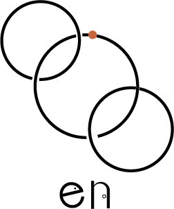
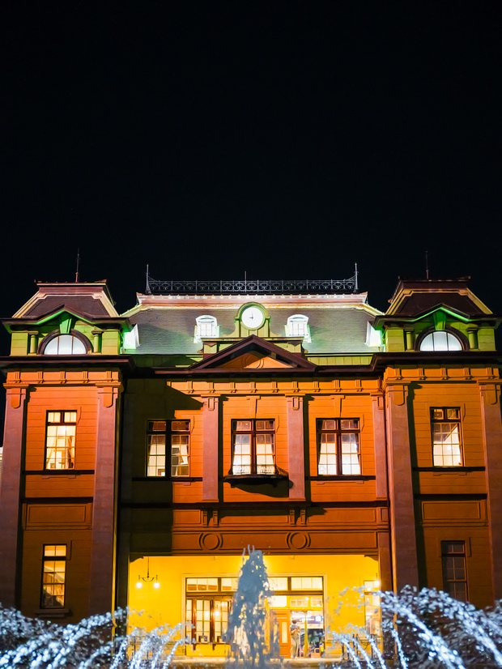
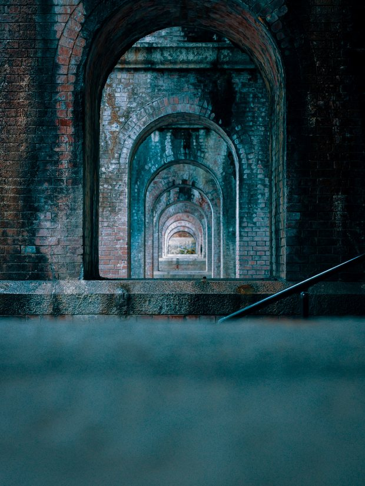
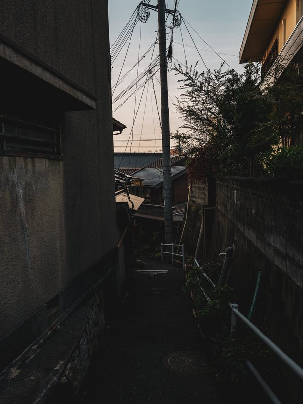
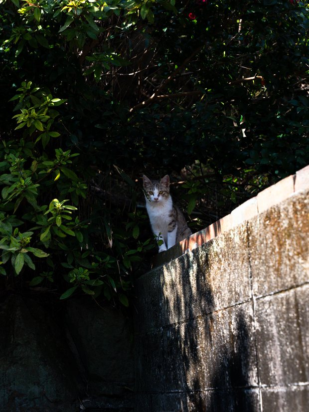
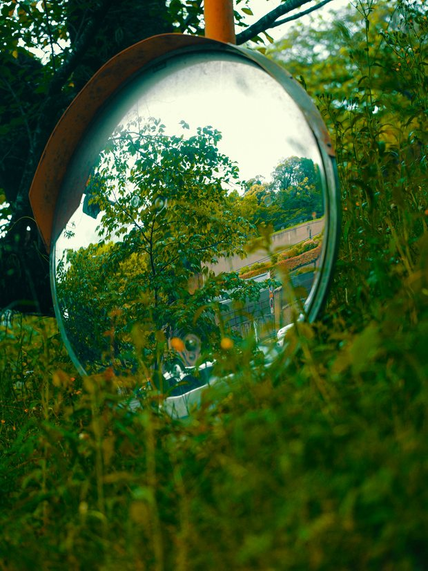
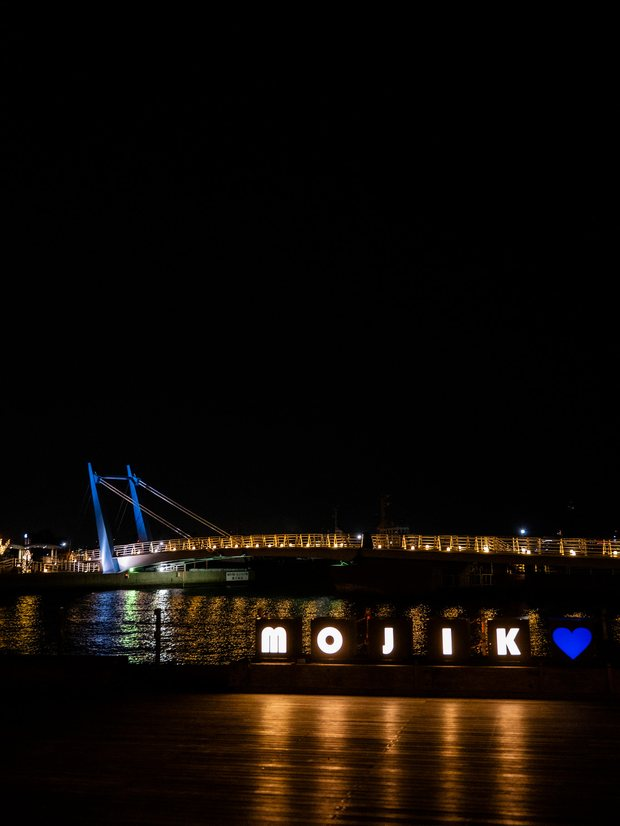

works

「えん」という名前には、人とお店をつなぐ「縁」と、想いを目に見える形にする「円」の意味を込めています。まだお店を知らない方にも魅力が届くよう、企画から制作、公開後の活用までご一緒します。
ご相談から企画、制作、その後のサポートまで、代表の呉屋が一貫して担当します。途中で担当者が変わらないため、お店の想いや背景を共有しながら、Webと映像を使った伝え方を一緒に考えられます。






北九州市 公式観光サイト「北九州パレット」掲載
まずは現在のお悩みや、実現したいことを一緒に整理します。
競合や市場、届けたいお客様を調べ、選ばれるための手がかりを見つけます。
目的やご予算に合わせて、Web・映像・SNSの活用方法をご提案します。
お店らしさを大切にしながら、伝わりやすい形へ整えていきます。
公開後の反応を確認しながら、必要に応じて改善や活用をサポートします。
まだ内容が決まっていない段階でも大丈夫です。お悩みや実現したいことを伺いながら、必要な方法を一緒に考えます。
相談してみる